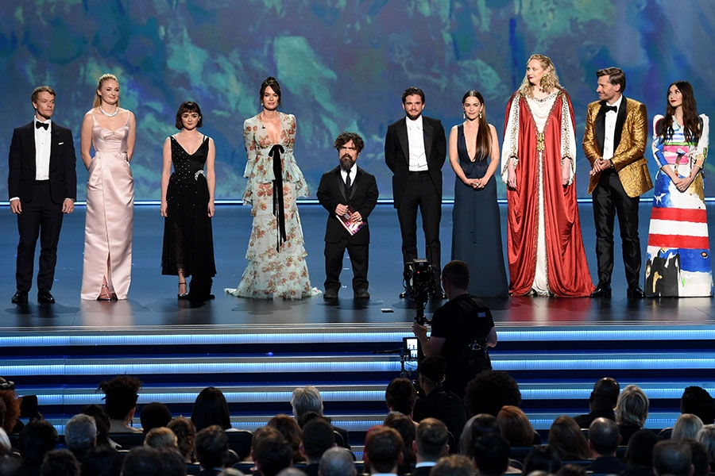

The series, mostly written by Benioff and Weiss, has been nominated for many awards, including eight Golden Globe Awards (one win), ten Writers Guild of America Awards, seven Producers Guild of America Awards (one win), eight Directors Guild of America Awards (two wins), seven Art Directors Guild Awards (five wins), thirty-four Saturn Awards (six wins), fourteen Satellite Awards (three wins), and a Peabody Award (one win). The series has received 160 Primetime Emmy Award nominations, including eight consecutive Outstanding Drama Series nominations, with a total of 59 wins. Game of Thrones received numerous nominations, with awards recognizing various aspects of the series such as directing, writing, cast, visual effects, or overall quality.
Peter Dinklage is the most awarded member of the cast, with recognitions such as the Primetime Emmy Award and Golden Globe for Best Supporting Actor in a Series. In addition, cast members Lena Headey, Emilia Clarke, Kit Harington, Maisie Williams, Nikolaj Coster-Waldau, Alfie Allen, Sophie Turner, Gwendoline Christie, Carice van Houten, Diana Rigg, and Max von Sydow received Primetime Emmy Award nominations for their performances in the series.The rest of the cast was also praised, many receiving various award nominations, including six Screen Actors Guild Award for Outstanding Performance by an Ensemble in a Drama Series nominations rewarding all of the main cast for seasons 1, 3, 4, 5, 6 and 7. In 2015, Game of Thrones set a record for winning the highest number of Primetime Emmy Awards for a series in a single year, with 12 wins out of 24 nominations. In 2016, it became the most awarded series in Emmy Awards history, with a total of 38 wins.To date, Game of Thrones has won 269 awards out of 738 nominations. The show also holds six world records from the Guinness Book of World Records, including "Most pirated TV program" and "Largest TV drama simulcast".
Peter Dinklage winning Emmy Award for Supporting Actor 2019
GOT wins Emmy Awards for Best Drama Series 2019